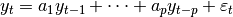

statsmodels.tsa.statespace.tools.companion_matrix¶
-
statsmodels.tsa.statespace.tools.companion_matrix(polynomial)[source]¶ Create a companion matrix
Parameters: polynomial : array_like or list
If an iterable, interpreted as the coefficients of the polynomial from which to form the companion matrix. Polynomial coefficients are in order of increasing degree, and may be either scalars (as in an AR(p) model) or coefficient matrices (as in a VAR(p) model). If an integer, it is interpereted as the size of a companion matrix of a scalar polynomial, where the polynomial coefficients are initialized to zeros. If a matrix polynomial is passed, may be set to the scalar value 1 to indicate an identity matrix (doing so will improve the speed of the companion matrix creation).
Returns: companion_matrix : array
Notes
Given coefficients of a lag polynomial of the form:
returns a matrix of the form
where some or all of the
 may be non-zero (if polynomial is
None, then all are equal to zero).
may be non-zero (if polynomial is
None, then all are equal to zero).If the coefficients provided are scalars , then the companion matrix is an matrix formed with the elements in the first column defined as
 .
.If the coefficients provided are matrices , each of shape , then the companion matrix is an matrix formed with the elements in the first column defined as
 .
.It is important to understand the expected signs of the coefficients. A typical AR(p) model is written as:

This can be rewritten as:
The coefficients from this form are defined to be , and it is the coefficients that this function expects to be provided.